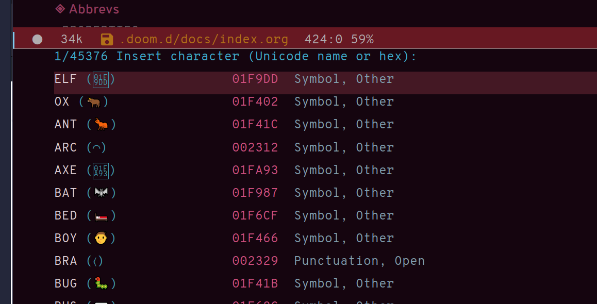

Dictionaries et cetera
Define-word
Quick word definition
Dictionary server
Dictionary server lookup
Webster
Look up word in Merriam-Webster
Powerthesaurus
Synonym lookup
Sentences lookup
Prose linting
Prose linting with Vale
Use C-c t f to toggle flycheck.
The Vale syntax checker will not check inside headings tagged with noexport. Outside of the noexport sections we can use these comments to turn Vale off and on:
This is checked by Vale.
# vale off
This is not going to be checked by Vale.
# vale on
This is checked by Vale.If we are working with an org-mode file that we don’t want to be checked by Vale we can write a configuration file that does not use any styles, called .vale.ini and place it at project root:
StylesPath = /path/to/vale-styles
MinAlertLevel = warning
[*]
BasedOnStyles =Mermaid
Mermaid script can be used to define diagrams in code blocks
Gantt diagram generated by Mermaid script
Typopunct
Typopunct is a package that enables us to simply write regular ASCII single and double quotes and have them automatically be converted into typographical quotes.
For example, typing 'quoted' will result in ‘quoted’, and "double-quoted" will result in “double-quoted”.
If we want to actually write a regular ASCII single or double quote, we need to use quoted-insert, which is bound to C-q, like this: C-q " to insert an ASCII ".
Note: some exporters, like the Hugo exporter, will automatically convert regular ASCII quotes to typographical quotes, unless you wrap them in code tags (~).
Additionally, typopunct also allows us to insert en-dash and em-dash by typing -- for – and --- for —.
Special characters
To insert special characters enter C-x 8 RETURN:

Now, instead of pressing return, we can conveniently insert an often used character by pressing that key.
For example, C-x 8 o will insert a degree symbol: °.
| code | character | code | character | code | character |
|---|---|---|---|---|---|
| C-x 8 C | © | C-x 8 R | ® | C-x 8 $ | ¤ |
| C-x 8 Y | ¥ | C-x 8 + | ± | C-x 8 . | · |
| C-x 8 L | £ | C-x 8 d | § | C-x 8 P | ¶ |
| C-x 8 c | ¢ | C-x 8 m | µ | C-x 8 o | ° |
| C-x 8 x | × | C-x 8 ? | ¿ | C-x 8 a < | ← |
| C-x 8 a - | ¯ | C-x 8 a = | ↔ | C-x 8 a > | → |
| C-x 8 N o | № | C-x 8 2 + | ‡ | C-x 8 ~ = | ≈ |
| C-x 8 _ > | ≥ | C-x 8 _ < | ≤ | C-x 8 1 + | † |
| C-x 8 / / | ÷ | C-x 8 / = | ≠ | C-x 8 * ! | ¡ |
| C-x 8 * * | • | C-x 8 * E | € | C-x 8 * + | ± |
| C-x 8 * . | · | C-x 8 3 / 4 | ¾ | C-x 8 1 / 2 | ½ |
| C-x 8 1 / 2 | ½ | C-x 8 ` e | è | C-x 8 ~ n | ñ |
| C-x 8 " " | ¨ | C-x 8 " u | ü | C-x 8 ’ o | ó |
| C-x 8 , , | ¸ | C-x 8 , c | ç | C-x 8 / a | å |
| C-x 8 / e | æ | C-x 8 / o | ø | C-x 8 ’ ' | ´ |
| C-x 8 ^ i | î |
Use C-x 8 C-h to see a list of available characters that can be typed this way. You might have to run Emacs without any customization, emacs Q, in order to be able to enter the command.
See also Emacs: Unicode Tutorial
Abbrevs
x a l : add local abbrev
x a g : add global abbrev
x a i l : add local inverse abbrev
x a i g : add global inverse abbrev
Use C-q SPACE to insert a literal space after a abbreviation instead of expanding it.
Registers
Introduction
Registers in Emacs is a bit like a clipboard where we can store not only text, but also numbers, positions in a buffer, window and frame configurations, rectangles, and bookmarks.
All registers, except bookmark registers, are not persisted between Emacs sessions, and they can be named using single characters, that is upper and lower case letters, numbers, and symbols.
Positions
x r SPACE : save position in a buffer to a register.
Use c x j to jump to saved buffer position.
Text
x r s : copy region to register.
Use x r i to insert the contents of a register.
Window configurations
x r w : save window configuration to register.
Use c x j to “jump” to a saved window configuration.
Bookmarks
Bookmarks are special buffer position registers that are persisted (saved) between Emacs sessions, and can be named using strings rather than single characters.
x r m : set bookmark.
x r b : jump to bookmark.
x r l : show bookmark list.
Click the Bookmark Menu in the status bar to see what commands are available.
Use q to close the bookmark list buffer.